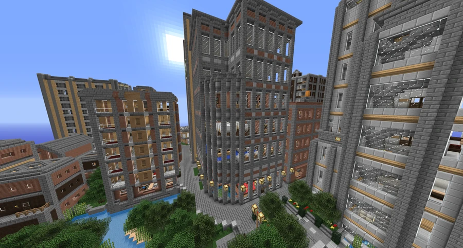

BanHammar Tower
A commercial tower in Downtown.
Construction and change of ownership
BanHammar Tower is a commercial tower in Downtown Broville. In early 2012, construction engineer Mentalgen broke ground and completed the outer shell within a few weeks.
The project originally reserved all office space for a single company. Complications surrounding the move-in date led the company to default on its construction loan, and the property was sold to FoxCreek Properties.
Layout and tenants
Mentalgen Construction had already completed the lobby and access stairway before the investors' default. FoxCreek completed the remaining interiors and converted the tower into a commercial building for multiple organizations, leasing each floor to a different occupant. The large two-story offices at the top were retained for its new commercial leasing division.
The inventory records these occupants:
- BroTech Web Services Support Division.
- BroForce Staffing LTD.
- J. A. Sellout Consulting.
- FoxCreek Properties Commercial Leasing Division.
Remodeling
A year after completion, the formerly stark gray facade received quartz highlights. A few months later, windows on the eastern face were blocked in to accommodate the third remodeling of FGM headquarters.
Gallery



See also
Sources and references
- v11.4.4 maps, signs, books and items World records
- BanHammar Tower · Broville Wiki Community archive
Text adapted and expanded from BanHammar Tower (contributors and history, revision 5078). Adapted text is available under CC BY-SA 3.0.